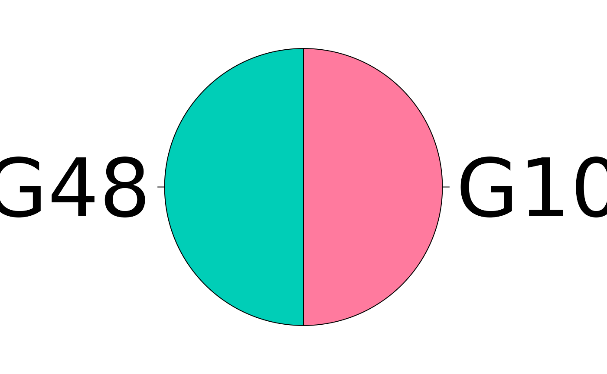

categoryCompare: High-throughput data meta-analysis using gene annotations, V2
Robert M Flight
2025-06-30 16:21:31.10508
Source:vignettes/v2_guide.Rmd
v2_guide.RmdIntroduction
Current high-throughput molecular biology experiments are generating larger and larger amounts of data. Although there are many different methods to analyze individual experiments, methods that allow the comparison of different data sets are sorely lacking. This is important due to the number of experiments that have been carried out on biological systems that may be amenable to either fusion or comparison. Most of the current tools available focus on finding those genes in experiments that are listed as the same, or that can be shown statistically that it is significant that the gene was listed in the results of both experiments.
However, what many of these tools do not do is consider the similarities (and just as importantly, the differences) between experimental results at the categorical level. Categorical data includes any gene annotation, such as Gene Ontologies, KEGG pathways, chromosome location, etc. categoryCompare has been developed to allow the comparison of high-throughput experiments at a categorical level, and to explore those results in an intuitive fashion.
Sample Data
To make the concept more concrete, we will examine data from the
microarray data set estrogen available from Bioconductor.
This data set contains 8 samples, with 2 levels of estrogen therapy
(present vs absent), and two time points (10 and 48 hours). A
pre-processed version of the data is available with this package, the
commands used to generate it are below. Note: the preprocessed one keeps
only the top 100 genes, if you use it the results will be slightly
different than those shown in the vignette.
datadir <- system.file("extdata", package = "estrogen")
pd <- read.AnnotatedDataFrame(file.path(datadir,"estrogen.txt"),
header = TRUE, sep = "", row.names = 1)
pData(pd)## estrogen time.h
## low10-1.cel absent 10
## low10-2.cel absent 10
## high10-1.cel present 10
## high10-2.cel present 10
## low48-1.cel absent 48
## low48-2.cel absent 48
## high48-1.cel present 48
## high48-2.cel present 48Here you can see the descriptions for each of the arrays. First, we will read in the cel files, and then normalize the data using RMA.
currDir <- getwd()
setwd(datadir)
a <- ReadAffy(filenames=rownames(pData(pd)), phenoData = pd, verbose = TRUE)## 1 reading low10-1.cel ...instantiating an AffyBatch (intensity a 409600x8 matrix)...done.
## Reading in : low10-1.cel
## Reading in : low10-2.cel
## Reading in : high10-1.cel
## Reading in : high10-2.cel
## Reading in : low48-1.cel
## Reading in : low48-2.cel
## Reading in : high48-1.cel
## Reading in : high48-2.cel
setwd(currDir)
eData <- affy::rma(a)## Warning: replacing previous import 'AnnotationDbi::tail' by 'utils::tail' when
## loading 'hgu95av2cdf'## Warning: replacing previous import 'AnnotationDbi::head' by 'utils::head' when
## loading 'hgu95av2cdf'## Background correcting
## Normalizing
## Calculating ExpressionTo make it easier to conceptualize, we will split the data up into two eSet objects by time, and perform all of the manipulations for calculating significantly differentially expressed genes on each eSet object.
So for the 10 hour samples:
e10 <- eData[, eData$time.h == 10]
e10 <- nsFilter(e10, remove.dupEntrez=TRUE, var.filter=FALSE,
feature.exclude="^AFFX")$eset
e10$estrogen <- factor(e10$estrogen)
d10 <- model.matrix(~0 + e10$estrogen)
colnames(d10) <- unique(e10$estrogen)
fit10 <- lmFit(e10, d10)
c10 <- makeContrasts(present - absent, levels=d10)
fit10_2 <- contrasts.fit(fit10, c10)
eB10 <- eBayes(fit10_2)
table10 <- topTable(eB10, number=nrow(e10), p.value=1, adjust.method="BH")
table10$Entrez <- unlist(mget(rownames(table10), hgu95av2ENTREZID, ifnotfound=NA))And the 48 hour samples we do the same thing:
e48 <- eData[, eData$time.h == 48]
e48 <- nsFilter(e48, remove.dupEntrez=TRUE, var.filter=FALSE,
feature.exclude="^AFFX" )$eset
e48$estrogen <- factor(e48$estrogen)
d48 <- model.matrix(~0 + e48$estrogen)
colnames(d48) <- unique(e48$estrogen)
fit48 <- lmFit(e48, d48)
c48 <- makeContrasts(present - absent, levels=d48)
fit48_2 <- contrasts.fit(fit48, c48)
eB48 <- eBayes(fit48_2)
table48 <- topTable(eB48, number=nrow(e48), p.value=1, adjust.method="BH")
table48$Entrez <- unlist(mget(rownames(table48), hgu95av2ENTREZID, ifnotfound=NA))And grab all the genes on the array to have a background set.
For both time points we have generated a list of genes that are differentially expressed in the present vs absent samples. To compare the time-points, we could find the common and discordant genes from both experiments, and then try to interpret those lists. This is commonly done in many meta-analysis studies that attempt to combine the results of many different experiments.
An alternative approach, used in categoryCompare, would
be to compare the significantly enriched categories from the two gene
lists. Currently the package supports two category classes, Gene
Ontology, and KEGG pathways. Both are used below.
Note 1: I am not proposing that this is the best way to analyse this particular data, it is a sample data set that merely serves to illustrate the functionality of this package. However, there are many different experiments where this type of approach is definitely appropriate, and it is up to the user to determine if their data fits the analytical paradigm advocated here.
Create GO Annotation Object
Before we can do our analysis, we need to define the
annotation object, which maps the annotations to the
features (genes in this case). For a Gene Ontology (GO) based analysis,
this would be all the genes annotated to a particular
GO term based on inheritance in the GO DAG. We can generate this list
using the GOALL column of the org.Hs.eg.db,
and then filter to the terms of interest, or use them all.
go_all_gene <- AnnotationDbi::select(org.Hs.eg.db, keys = gUniverse, columns = c("GOALL", "ONTOLOGYALL"))## 'select()' returned 1:many mapping between keys and columns
go_all_gene <- go_all_gene[go_all_gene$ONTOLOGYALL == "BP", ]
bp_2_gene <- split(go_all_gene$ENTREZID, go_all_gene$GOALL)
bp_2_gene <- lapply(bp_2_gene, unique)
bp_desc <- AnnotationDbi::select(GO.db, keys = names(bp_2_gene), columns = "TERM", keytype = "GOID")$TERM## 'select()' returned 1:1 mapping between keys and columns
names(bp_desc) <- names(bp_2_gene)
bp_annotation <- categoryCompare2::annotation(annotation_features = bp_2_gene,
description = bp_desc,
annotation_type = "GO.BP")Do Enrichment
Now we can do hypergeometric enrichment with each of the gene lists.
g10_enrich <- hypergeometric_feature_enrichment(
new("hypergeom_features", significant = g10,
universe = gUniverse, annotation = bp_annotation),
p_adjust = "BH"
)
g48_enrich <- hypergeometric_feature_enrichment(
new("hypergeom_features", significant = g48,
universe = gUniverse, annotation = bp_annotation),
p_adjust = "BH"
)Combine and Find Significant
bp_combined <- combine_enrichments(g10 = g10_enrich,
g48 = g48_enrich)
bp_sig <- get_significant_annotations(bp_combined, padjust <= 0.001, counts >= 2)
bp_sig@statistics@significant## Signficance Cutoffs:
## padjust <= 0.001
## counts >= 2
##
## Counts:
## g10 g48 counts
## G1 1 1 72
## G2 1 0 53
## G3 0 1 48
## G4 0 0 14118Generate Graph
bp_graph <- generate_annotation_graph(bp_sig)
bp_graph## A cc_graph with
## Number of Nodes = 135
## Number of Edges = 7740
## g10 g48 counts
## G1 1 1 64
## G2 1 0 26
## G3 0 1 45
bp_graph <- remove_edges(bp_graph, 0.8)## Removed 7530 edges from graph
bp_graph## A cc_graph with
## Number of Nodes = 135
## Number of Edges = 210
## g10 g48 counts
## G1 1 1 64
## G2 1 0 26
## G3 0 1 45
bp_assign <- annotation_combinations(bp_graph)
bp_assign <- assign_colors(bp_assign)Find Communities
It is useful to define the annotations in terms of their communities. To do this we run methods that find and then label the communities, before generating the visualization and table.
bp_communities <- assign_communities(bp_graph)
bp_comm_labels <- label_communities(bp_communities, bp_annotation)Cytoscape Visualization
bp_vis <- vis_in_cytoscape(bp_graph, bp_assign, "BP")And we can generate a legend so we know which colors correspond to which group.
generate_legend(bp_assign)